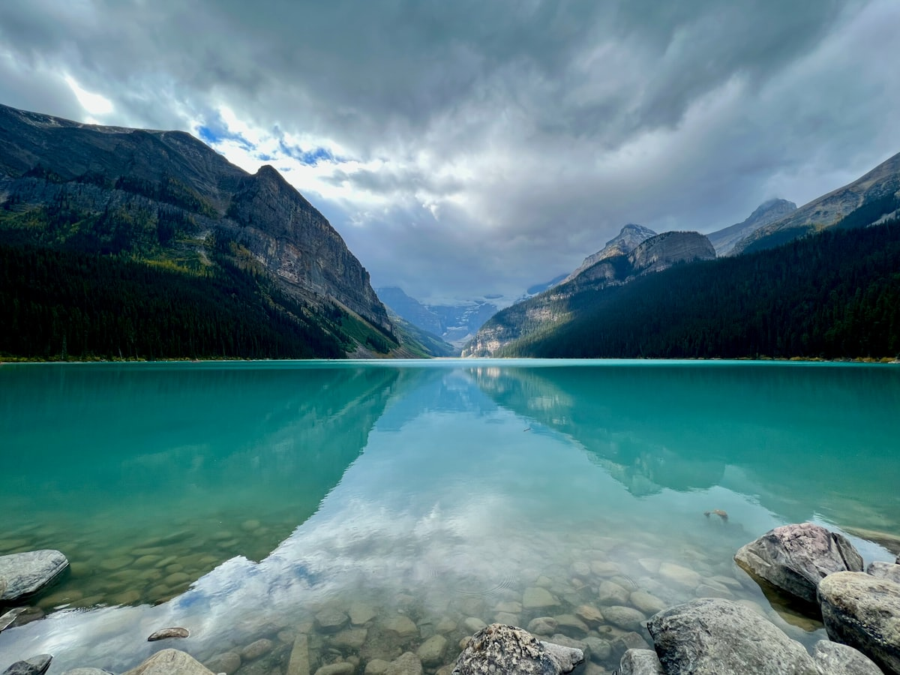
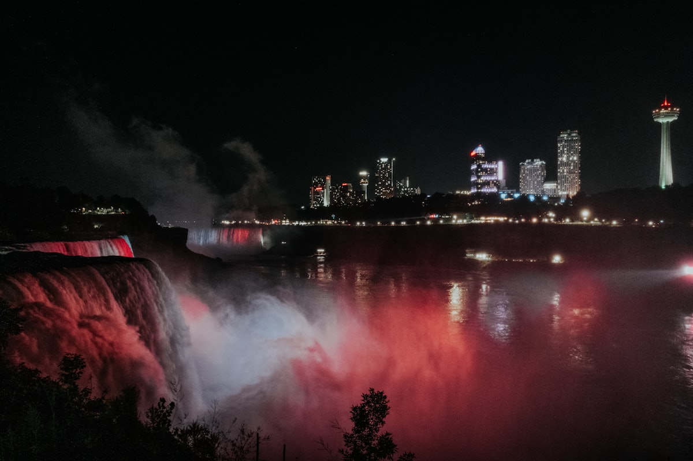
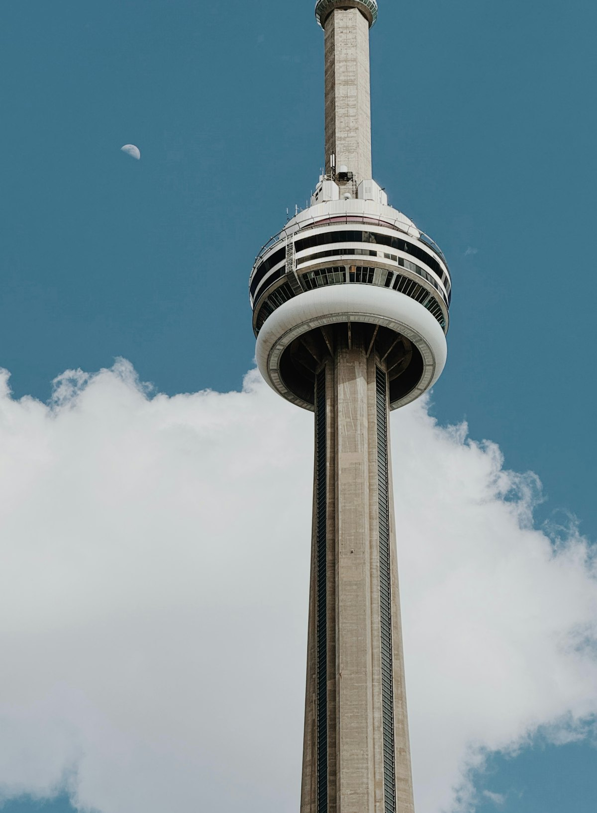
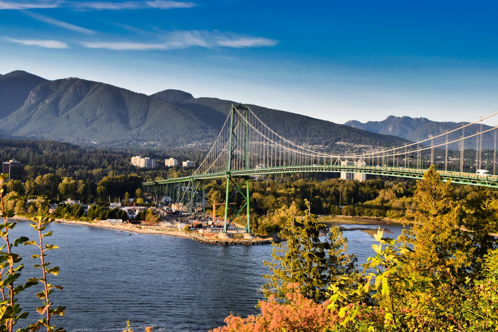
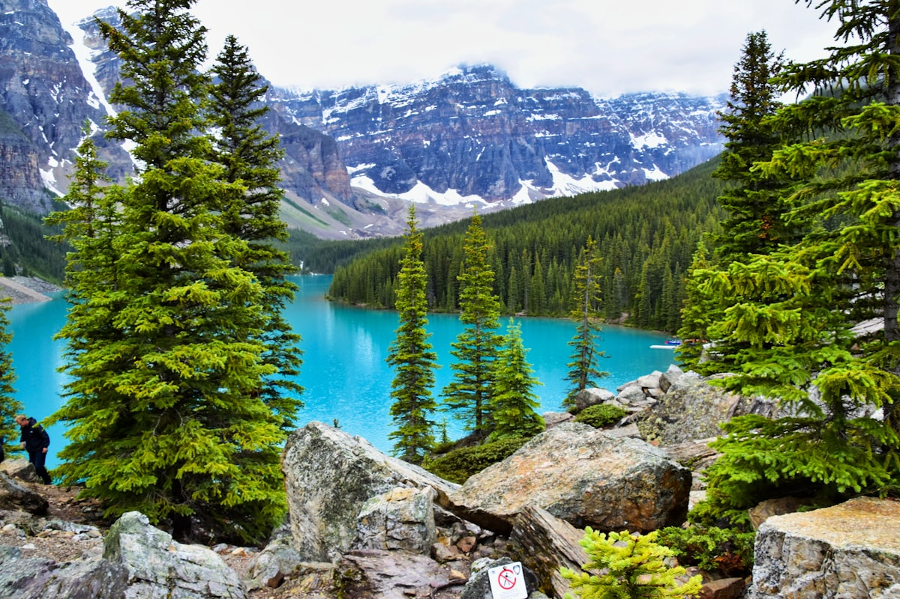
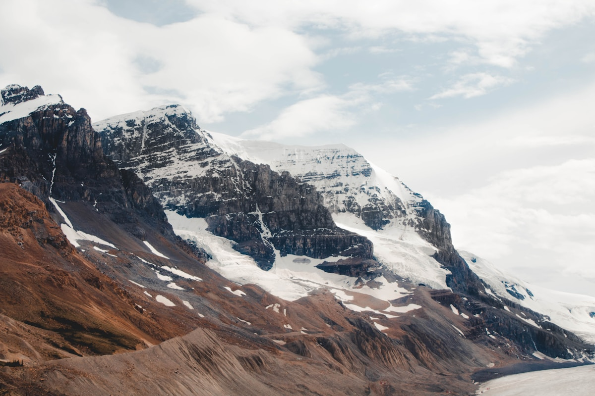
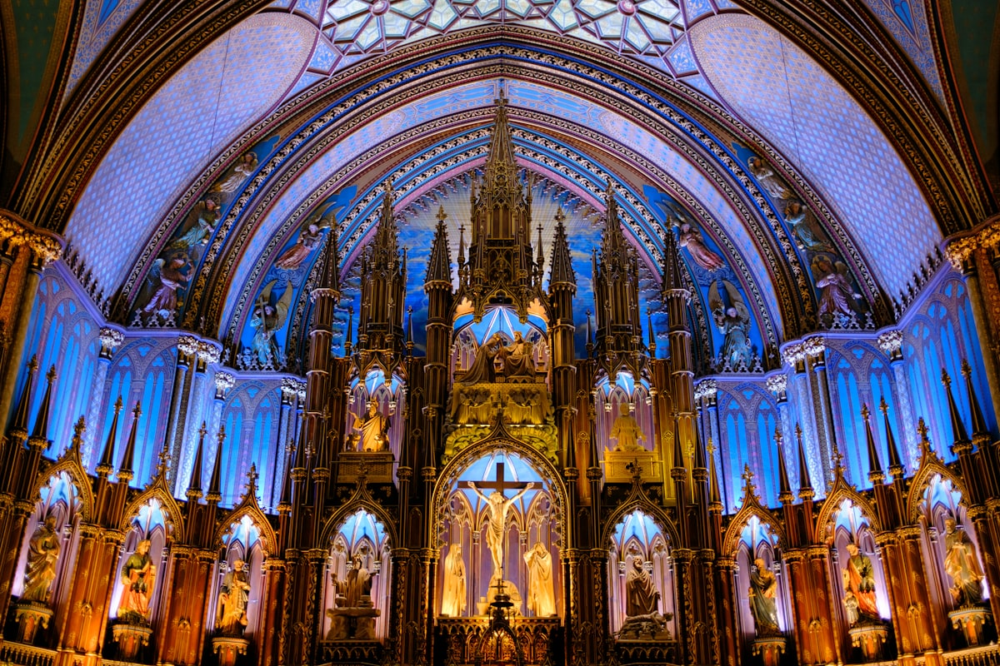
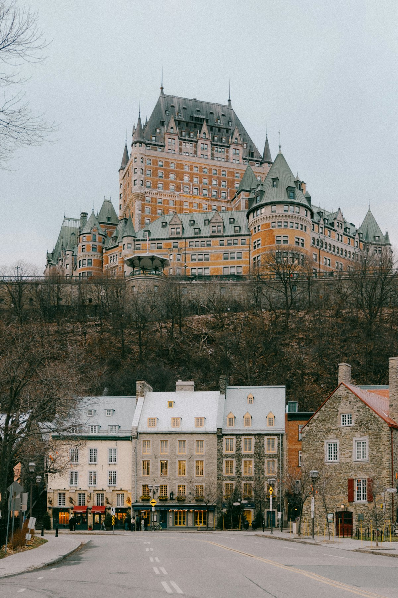

| 事项 | 结论 |
|---|---|
| 事项 | 结论 |
| 签证（最关键） | 中国护照需提前申请加拿大访问签证（10 年多次）；eTA 仅适用免签国，中国护照不适用，周期 2–6 周 |
| 推荐方案 | 东部（多伦多/渥太华/蒙特利尔/魁北克城）+ 西部（温哥华/班夫/贾斯珀）两段拼图 |
| 返程约束 | 第 20 天从多伦多返程，直飞约 13h；6–9 月旺季机票需提前 2–3 个月订 |
| 行程链 | 多伦多 → 尼亚加拉 → 温哥华 → 班夫/路易斯湖 → 贾斯珀 → 渥太华 → 蒙特利尔 → 魁北克城 |
| 预算（人均） | 经济 20000–30000 ／ 标准 35000–50000 ／ 舒适 80000–120000（人民币） |
| 三件提前事 | ① 办签证（含指纹采集）② 订内陆机票（多伦多—温哥华）③ 班夫/路易斯湖住宿提前 3 个月 |
| 季节提醒 | 6–9 月落基山黄金季；9 月底–10 月中东岸枫叶季；12–3 月滑雪季（班夫/惠斯勒） |
| 支付 | 信用卡（Visa/Master）覆盖极广 + 少量现金；小费文化：餐厅 15–20% |
以下为 20 天 19 晚的推荐节奏：先东部 4 天，飞西部 9 天（温哥华 + 落基山自驾），再飞回东部 7 天收尾。每日主景点 ≤2 个，落基山段以自驾串联。
| 日期 | 行程 | 过夜地 | 主题 |
|---|---|---|---|
| D1 抵多伦多 | 北京✈多伦多（直飞约 12.5–13h），入住市中心，傍晚湖滨看日落 | 多伦多 | 抵达+预热 |
| D2 | CN塔 + 安大略水族馆 → 圣劳伦斯市场 → 古酿酒厂区 | 多伦多 | 都市核心 |
| D3 | 皇家安大略博物馆 ROM → 卡萨罗玛城堡 → 央街/伊顿中心 | 多伦多 | 博物馆与城堡 |
| D4 | 尼亚加拉瀑布一日：游船 + 瀑布步道 + 夜间灯光秀 | 多伦多 | 尼亚加拉日 |
| D5 | ✈温哥华（约 5h）：斯坦利公园海堤骑行 → 格兰维尔岛 | 温哥华 | 飞抵+海岸公园 |
| D6 | 卡皮拉诺吊桥 → 煤气镇蒸汽钟 → 英吉利湾日落 | 温哥华 | 吊桥与老镇 |
| D7 | 出海观鲸（可选）→ 下午✈卡尔加里，宿机场附近 | 卡尔加里 | 出海+转场 |
| D8 | 车到班夫（约 1.5h）：硫磺山缆车 + 班夫镇 + 弓河瀑布 | 班夫 | 班夫初探 |
| D9 | 路易斯湖 + 梦莲湖：翠湖木舟 + 十峰谷徒步 | 班夫 | 湖光山色 |
| D10 | 冰原大道：弓湖 → 佩托湖 → 哥伦比亚冰原雪车，宿贾斯珀 | 贾斯珀 | 冰原大道 |
| D11 | 玛琳湖游船（精灵岛）+ 玛琳峡谷 | 贾斯珀 | 贾斯珀湖谷 |
| D12 | 金字塔湖晨雾 → 返卡尔加里✈渥太华（夜抵） | 渥太华 | 转场东岸 |
| D13 | 国会山 + 里多运河 + 拜沃德市场 | 渥太华 | 首都日 |
| D14 | 蒙特利尔：圣母大教堂 + 老港 + 皇家山 | 蒙特利尔 | 法式风情 |
| D15 | 蒙特利尔：麦吉尔大学 + 小意大利 + 圣约瑟夫大教堂 | 蒙特利尔 | 老城漫步 |
| D16 | 魁北克城：芳堤娜城堡 + 小香普兰街 + 老城墙 | 魁北克城 | 北美最古老 |
| D17 | 蒙莫朗西瀑布 + 圣安妮峡谷，晚返蒙特利尔 | 蒙特利尔 | 瀑布与峡谷 |
| D18 | 蒙特利尔→多伦多（VIA 火车约 5h），下午自由活动 | 多伦多 | 火车转场 |
| D19 | 尼亚加拉湖边小镇（可选）或多伦多购物/博物馆自由日 | 多伦多 | 自由日 |
| D20 返程 | 多伦多✈北京（直飞约 13h），到家休息 | — | 收尾 |
以下为 20 天全程的逐小时执行时间线，可当作「当天打开照着走」的清单。标注 ※ 的可选项视体力与天气取舍。
| 时间 | 事项 |
|---|---|
| 09:00–15:00 | 北京✈多伦多（直飞约 12.5–13h，时差 -13h，机上调整作息） |
| 16:00–18:00 | 入境取行李，皮尔逊机场坐 UP 机场快线（约 25 分钟、12.35 加元）到市中心联合车站 |
| 18:30–20:00 | 入住市中心酒店，圣劳伦斯市场或央街简单晚餐 |
| 20:30–22:00 | 湖滨步道散步看安大略湖日落，倒时差早睡 |
| 时间 | 事项 |
|---|---|
| 09:00–11:00 | CN塔（成人约 38 加元）：360° 观景台 + 玻璃地板，俯瞰安大略湖与天际线 |
| 11:00–12:30 | 安大略水族馆 Ripley's（成人约 49 加元）：海底隧道、水母区，亲子必去 |
| 12:30–14:00 | 午餐：圣劳伦斯市场（世界最佳市场之一）：龙虾卷、腌肉三明治 |
| 14:30–16:30 | 古酿酒厂区 Distillery District（免费）：维多利亚红砖厂房 + 艺廊咖啡馆 |
| 17:30–19:30 | 央街/伊顿中心购物 + 晚餐：唐人街或小意大利 |
| 时间 | 事项 |
|---|---|
| 09:00–11:30 | 皇家安大略博物馆 ROM（成人约 25 加元）：恐龙骨骼 + 中国馆 + 原住民文明 |
| 12:00–13:00 | 午餐：皇后西街 Queen West 网红早午餐/咖啡 |
| 13:30–16:00 | 卡萨罗玛城堡（成人约 40 加元）：北美最大私人城堡，60 间房 + 地下隧道 |
| 16:30–18:00 | 湖心岛渡轮（往返约 8.6 加元）：多伦多天际线最佳机位，骑行/散步 |
| 18:30 | 晚餐：安大略湖畔餐厅或市区海鲜吧 |
| 时间 | 事项 |
|---|---|
| 08:00 | 多伦多乘大巴/自驾到尼亚加拉瀑布城（约 1.5–2h） |
| 10:00–12:00 | 霍恩布洛尔游船（成人约 37 加元）：近距离冲进马蹄瀑布水雾，备雨衣 |
| 12:00–13:30 | 午餐：瀑布观景餐厅或 Table Rock 简餐 |
| 13:30–16:00 | 瀑布步道 + 观景塔（观景免费，塔约 22 加元）：从高到低多角度看三大瀑布 |
| 18:00–21:00 | 夜间彩灯瀑布 + 烟火（夏季周五/周日），返多伦多 |
| 时间 | 事项 |
|---|---|
| 08:00 | 多伦多✈温哥华（约 5h，加航/西捷，提前订单程约 800–2000 元） |
| 13:00–14:30 | 入住温哥华市中心，午餐：Robson 街拉面/寿司 |
| 15:00–18:00 | 斯坦利公园（免费）：海堤步道骑行/徒步 + 图腾柱 + 狮门桥全景 |
| 18:30–20:30 | 格兰维尔岛（免费）：公共市场吃海鲜 + 街头艺人，日落返酒店 |
| 时间 | 事项 |
|---|---|
| 09:00–11:30 | 卡皮拉诺吊桥（成人约 75 加元，含公园）：450 英尺高空吊桥 + 树顶探险 |
| 11:30–13:00 | 午餐：北温渔人码头炸鱼薯条 |
| 14:00–16:00 | 煤气镇（免费）：蒸汽钟 + 红砖老建筑 + 精品店 |
| 16:30–18:00 | 英吉利湾（免费）：沙滩看日落 + 日落沙滩草坪 |
| 18:30 | 晚餐：温哥华海鲜（三文鱼/生蚝/帝王蟹） |
| 时间 | 事项 |
|---|---|
| 08:00–11:00 | 出海观鲸/观海豚（可选，约 120–160 加元）：温哥华外海虎鲸、座头鲸 |
| 11:30–13:00 | 午餐：渔人码头/市中心简餐 |
| 14:00–17:00 | 下午✈卡尔加里（约 1.5h，班次密），宿机场附近酒店 |
| 18:00 | 晚餐：卡尔加里牛排/艾伯塔牛肉，早休息 |
| 时间 | 事项 |
|---|---|
| 08:00 | 卡尔加里取车/乘巴士到班夫镇（约 1.5h，一路落基山风光） |
| 10:30–12:30 | 班夫硫磺山缆车（成人约 70 加元往返）：山顶俯瞰弓河谷 + 班夫镇全景 |
| 12:30–14:00 | 午餐：班夫镇主街 Cascade 街区（麋鹿肉汉堡/烤三文鱼） |
| 14:30–16:00 | 弓河瀑布 + 惊喜角（免费）：弓河碧水与雪山背景 |
| 16:30–18:00 | 班夫镇漫步：手作店 + 班夫公园博物馆；晚餐镇内 |
| 时间 | 事项 |
|---|---|
| 07:30 | 班夫出发到路易斯湖（约 1h 车程） |
| 09:00–11:30 | 路易斯湖（免费）：翡翠色冰川湖 + 湖畔木舟（约 90 加元/1h）+ 费尔蒙城堡酒店 |
| 11:30–13:00 | 午餐：路易斯湖滑雪场山顶餐厅/湖畔简餐 |
| 13:30–16:00 | 梦莲湖（免费）：十峰谷全景 + 岩石堆步道，全球拍照打卡地 |
| 16:30–18:00 | 返班夫，路上佩托湖观景点（蓝绿色冰川湖） |
| 时间 | 事项 |
|---|---|
| 08:00 | 沿冰原大道（93 号公路）北上：北美最壮观公路之一 |
| 09:30–10:30 | 弓湖 Bow Lake：湖畔红色小木屋 + 雪山倒影 |
| 10:30–11:30 | 佩托湖 Peyto Lake 观景台：冰川湖经典蓝 |
| 12:30–15:30 | 哥伦比亚冰原冰原雪车（成人约 119 加元）：上冰川行走 + 天空步道（联票） |
| 16:30–18:00 | 抵达贾斯珀镇，晚餐 + 休息 |
| 时间 | 事项 |
|---|---|
| 08:30 | 贾斯珀镇出发到玛琳湖（约 40min 车程） |
| 09:30–12:00 | 玛琳湖游船（成人约 90 加元）：翡翠湖 + 斯皮里特岛精灵岛 |
| 12:00–13:30 | 午餐：湖滨野餐或返镇简餐 |
| 14:00–16:00 | 玛琳峡谷（免费）：六桥徒步，瀑布与峡谷深谷 |
| 17:00–19:00 | 贾斯珀镇晚餐：鹿肉/手工披萨；夜观星空（暗夜保护区） |
| 时间 | 事项 |
|---|---|
| 08:00–10:00 | 贾斯珀自由：金字塔湖/帕特里夏湖晨雾（免费） |
| 10:30–14:00 | 驱车/巴士返卡尔加里（约 4h），机场简餐 |
| 15:30–20:00 | 卡尔加里✈渥太华（经多伦多/温哥华转机，全程约 5–6h） |
| 20:30 | 入住渥太华市中心，早休息 |
| 时间 | 事项 |
|---|---|
| 09:00–12:00 | 国会山（免费）：和平塔 + 国会图书馆，7–9 月有免费导览 |
| 12:00–13:30 | 午餐：拜沃德市场 ByWard Market：枫糖培根汉堡/奶酪 |
| 14:00–16:00 | 里多运河（免费）：夏季可租皮划艇/骑行，冬季是世界最大滑冰场 |
| 16:30–18:00 | 加拿大国家美术馆（成人约 20 加元）：大蜘蛛雕塑 + 当代馆 |
| 18:30 | 晚餐：Sparks 街或市场区 |
| 时间 | 事项 |
|---|---|
| 08:00 | 渥太华乘 VIA 火车/大巴到蒙特利尔（约 2h） |
| 10:00–12:00 | 圣母大教堂（成人约 10 加元）：北美最大教堂之一，蓝金穹顶 + AURA 灯光秀（晚间另购） |
| 12:00–13:30 | 午餐：老港法餐/肉汁奶酪薯条 Poutine |
| 14:00–16:00 | 老港（免费）：圣劳伦斯河畔 + 摩天轮（约 25 加元） |
| 16:30–18:30 | 皇家山（免费）：观景台俯瞰蒙特利尔天际线 |
| 时间 | 事项 |
|---|---|
| 09:00–11:00 | 麦吉尔大学（免费）：红砖校园 + 罗迪克公园 |
| 11:00–13:00 | 小意大利 + Jean-Talon 市场：农场直供市场 + 手工意面 |
| 14:00–16:00 | 圣约瑟夫大教堂（免费）：北美最大圆顶教堂 + 观景台 |
| 16:30–18:30 | 高原区 Plateau：彩虹门廊 + 咖啡店街拍，晚餐：百吉饼/熏肉三明治（Schwartz's） |
| 时间 | 事项 |
|---|---|
| 08:00 | 蒙特利尔乘 VIA 火车/大巴到魁北克城（约 3h） |
| 11:30–13:00 | 入住老城酒店，午餐：法式油封鸭/枫糖奶油 |
| 13:30–16:00 | 芳堤娜城堡（大堂免费参观）：北美最上镜酒店 + 杜夫兰步道 |
| 16:00–18:00 | 小香普兰街（免费）：鹅卵石街道 + 手工艺品店 + 街头画家 |
| 18:30–20:00 | 老城墙夜景 + 晚餐：魁北克法餐 |
| 时间 | 事项 |
|---|---|
| 09:00–11:30 | 蒙莫朗西瀑布（成人约 16 加元）：尼亚加拉 1.5 倍高，缆车 + 瀑布吊桥 |
| 11:30–13:00 | 午餐：瀑布观景餐厅 |
| 13:30–16:00 | 圣安妮峡谷（成人约 17 加元）：三座吊桥穿越峡谷瀑布群 |
| 16:30–19:00 | 返蒙特利尔（约 3h），晚餐 + 休息 |
| 时间 | 事项 |
|---|---|
| 09:00–14:00 | 蒙特利尔乘 VIA 火车到多伦多（约 5h，沿途安大略湖景色） |
| 15:00–17:30 | 自由活动：CN塔补夜景/古酿酒厂区逛买 |
| 18:00 | 晚餐：多伦多中餐/日料（华人区一绝） |
| 时间 | 事项 |
|---|---|
| 09:00–11:00 | 尼亚加拉湖边小镇 Niagara-on-the-Lake（可选）：英式小镇 + 酒庄品酒（约 30 加元/人） |
| 11:30–13:00 | 午餐：小镇酒庄餐厅/湖边 |
| 13:30–17:00 | 回多伦多：伊顿中心/约克维尔购物补货，或皇家安大略博物馆补漏 |
| 18:00 | 告别晚餐：湖畔牛排/生蚝吧 |
| 时间 | 事项 |
|---|---|
| 08:00–10:00 | 自由活动 + 退房，前往皮尔逊机场 |
| 10:30–12:00 | 免税店扫货：枫糖浆、冰酒、枫叶纪念品 |
| 12:00–14:00 | 午餐：机场 |
| 15:00 | 多伦多✈北京（直飞约 13h），次日抵达 |
必去（必去）/ 顺路（顺路）/ 可跳过（可跳过）。

必去
必去
必去
必去
顺路
必去
必去图片为 Unsplash 主题图（路易斯湖、尼亚加拉瀑布、CN塔、斯坦利公园、梦莲湖、哥伦比亚冰原、圣母大教堂、芳堤娜城堡均为加拿大实景）。更多免费景点：班夫弓河瀑布、温哥华煤气镇、蒙特利尔皇家山、渥太华国会山。
点击左侧节点可在地图上定位；点击地图 marker 会高亮对应节点。坐标为 WGS-84 转 GCJ-02 纠偏后标注。
以下为单人、不含购物的估算，人民币计价；出发地基准北京。汇率按 1 人民币 ≈ 0.19 加元估算。往返机票按淡旺季混合 7000–14000 元计，旺季（6–9 月）上浮 30–50%。
| 项目 | 经济（20000–30000） | 标准（35000–50000） | 舒适（80000–120000） |
|---|---|---|---|
| 往返机票 | 北京⇄多伦多 7000–10000 | 含内陆段 9000–13000 | 直飞商务/灵活 20000–30000 |
| 住宿（19 晚） | 青旅/民宿 350–550/晚 | 三星/连锁 800–1500/晚 | 费尔蒙/高端 2000–4000/晚 |
| 交通（租车+内陆航班） | 内陆航班+巴士 5000–7000 | 租车+航班 8000–12000 | 租车+包车+头等 18000–30000 |
| 门票 | 基础景点约 1500–2500 | 含缆车/雪车/游船约 3000–5000 | 全含+直升机遇难 8000–12000 |
| 餐饮（20 天） | 快餐+超市 3500–5000 | 正常下馆子 7000–10000 | 法餐/牛排/海鲜 20000–30000 |
落基山段延长为 10 天：班夫+路易斯湖滑雪场（如阳光村、路易斯湖滑雪场）+ 冰原大道雪景 + 班夫温泉；东岸缩为 3–4 天。冬季机票便宜 30–40%，但自驾必须确认雪胎与四驱。班夫滑雪季 11 月–次年 5 月。
带娃推荐：多伦多水族馆+动物园（2 天）、尼亚加拉蝴蝶馆、温哥华斯坦利公园骑行、班夫缆车与梦莲湖；砍掉观鲸与贾斯珀长线徒步。加拿大国家公园门票按车计费（约 20–30 加元/天），亲子自驾最划算。
| 方式 | 时长 | 参考价 | 备注 |
|---|---|---|---|
| 直飞（推荐） | 北京→多伦多约 12.5–13h | 往返 7000–14000 元 | 国航/海航/加航，旺季上浮明显 |
| 转机 | 14–20h | 5000–9000 元 | 经上海/香港/首尔/东京，便宜但费时 |
| 境内航班 | 多伦多—温哥华约 5h | 单程 800–2000 元 | 加航/西捷，跨东西岸必飞 |
| 区域 | 价格/晚 | 优点 | 短板 |
|---|---|---|---|
| 多伦多·市中心 | 经济 450–750 / 标准 900–1500 | 景点步行可达，地铁方便 | 旺季贵 |
| 温哥华·市中心/煤气镇 | 经济 500–800 / 标准 1000–1800 | 海景与美食集中 | 停车贵，酒店老 |
| 班夫镇/路易斯湖 | 经济 800–1500 / 标准 1800–3500 | 国家公园核心，出门即景 | 旺季 3 个月一房难求 |
| 贾斯珀镇 | 经济 600–1000 / 标准 1200–2500 | 暗夜星空，小镇安静 | 房源少，旺季抢手 |
| 蒙特利尔·老港/高原区 | 经济 450–750 / 标准 800–1400 | 法式风情，夏季节庆多 | 老建筑隔音一般 |
| 魁北克城·老城 | 经济 500–900 / 标准 1000–1800 | 城墙内步行，夜景绝美 | 冬季冷，车位难找 |